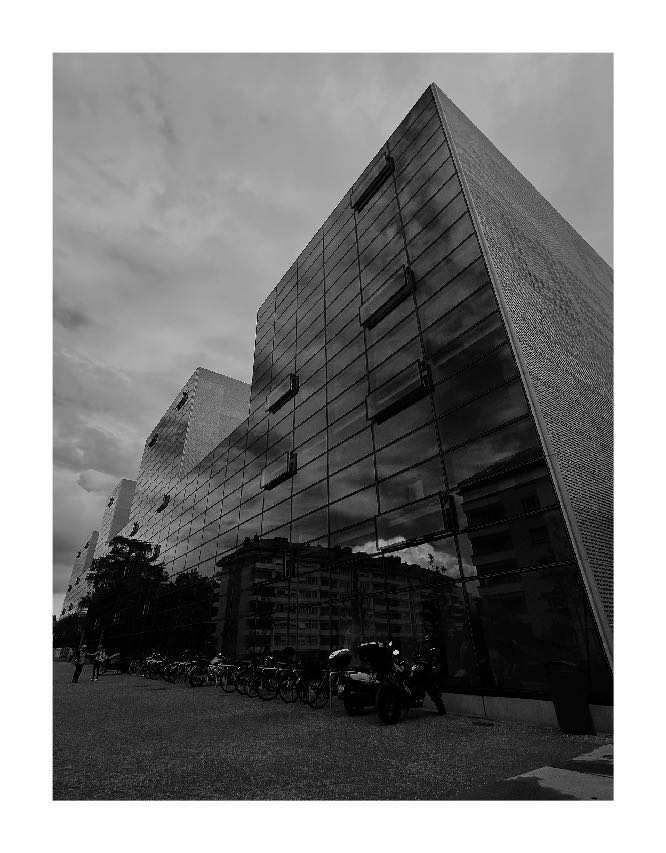
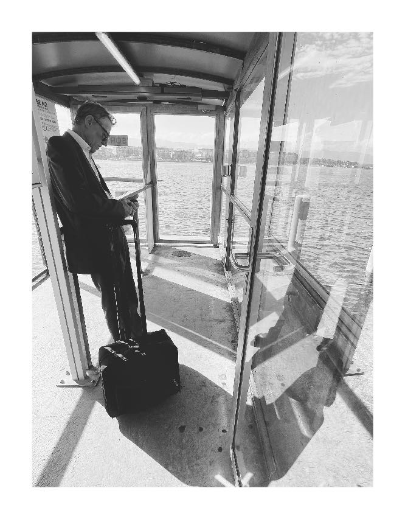
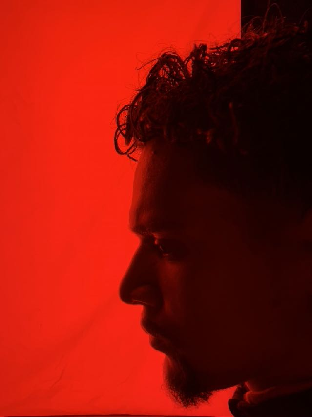

BEN TALEB / EDITION
BEN TALEB / EDITIONFine-art photography
From CHF 180Ben Taleb Editions
Museum-quality Hahnemühle Photo Rag · three sizes · certified limited edition.
Discover editions ↗The Domus Cultura store
Limited photography by Ben Taleb, cultural objects, artist collaborations and weekly sound selections by Juice+.
↓
01 — Shop the first drop
Three focused collections, produced responsibly and released in considered quantities.
BEN TALEB / EDITIONMuseum-quality Hahnemühle Photo Rag · three sizes · certified limited edition.
Discover editions ↗T-shirts, sweatshirts, caps, mugs, totes and postcard sets—made only after purchase, with no inventory.
Get drop access ↗Small-run editions made with invited artists across image, sound and material.
Propose a collaboration ↗ BEN TALEB / GOOD MORNING WORLD
BEN TALEB / GOOD MORNING WORLD02 — Ben Taleb / Limited photography
Produced only after purchase on Hahnemühle Photo Rag 308 gsm using archival pigment inks. Each approved edition will be registered through My Art Registry and accompanied by a signed certificate with its matching numbered hologram.
03 — Domus Radio
A weekly hour of music, references and new discoveries. Listen here or open the Juice+ SoundCloud channel ↗
04 — Field Notes
Gallery visits, artist studios, exhibitions, books and the ideas behind new work.
 Gallery visit · Vaud
Gallery visit · VaudHigh-resolution visual essays from spaces shaping culture now.

Atelier conversationArtists on process, material, place and persistence.

Domus indexExhibitions, records, books and objects worth knowing.
05 — Events
Pop-ups, gallery visits, atelier conversations and listening sessions. The first Domus Cultura programme is currently in development.
Register interest ↗